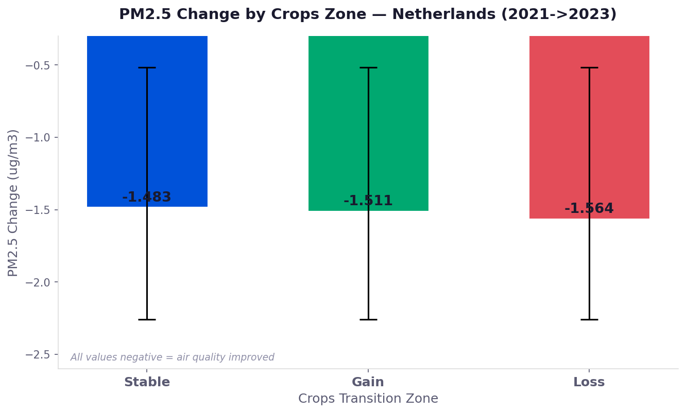

Processing Results
Netherlands — Air quality and land cover change analysis, 2021 to 2023
Student C — PM₂.₅ Annual Trends
CAMS reanalysis data processed from hourly NetCDF to monthly aggregates, then annual averages for 2021 and 2023.
EU concentration classes
| Class | Range | Label |
|---|---|---|
| 1 | ≤ 5 μg/m³ | Good |
| 2 | 5 – 10 μg/m³ | Moderate |
| 3 | 10 – 20 μg/m³ | Fair |
| 4 | 20 – 25 μg/m³ | Poor |
| 5 | > 25 μg/m³ | Very Poor |
Land Cover Transition Analysis
LC₂₀₂₁ × 100 + LC₂₀₂₃ transition codes, classified into Stable (505), Gain, and Loss for Crops.
| Indicator | Value | Category |
|---|---|---|
| Stability (Persistence) | 95.5% | N/A (Baseline) |
| Primary Source of Gain | 42.9% | Rangeland (Code 11) |
| Secondary Source of Gain | 27.9% | Built Area (Code 7) |
| Tertiary Source of Gain | 21.0% | Trees (Code 2) |
| Primary Destination of Loss | 40.5% | Built Area (Code 7) |
| Secondary Destination of Loss | 36.1% | Rangeland (Code 11) |
| Tertiary Destination of Loss | 18.4% | Trees (Code 2) |
Zonal Statistics — PM₂.₅ Change by Crops Zone
Binary mask, polygonize, dissolve, and zonal statistics (mean, min, max). QGIS manual processing.
| Zone | Mean (μg/m³) | Min | Max | Std Dev |
|---|---|---|---|---|
| Stable Crops | −1.483 | −2.258 | −0.519 | 0.339 |
| Gain (New Crops) | −1.511 | −2.258 | −0.519 | 0.320 |
| Loss (Crops → Other) | −1.564 | −2.258 | −0.519 | 0.340 |

Interpretation. PM₂.₅ decreased across all Crops zones. The Loss zone shows the strongest decrease (−1.564 μg/m³), while Stable Crops areas show slightly less reduction (−1.483 μg/m³). Differences between zones are modest, suggesting land cover type has a limited influence on PM₂.₅ trends at the national scale.
Population Exposure Assessment
WorldPop population data overlaid with PM₂.₅ concentration classes at GAUL L2 administrative level (342 regions).
| PM₂.₅ Class | Label | Exposed Population | Percentage |
|---|---|---|---|
| 2 | Moderate (5–10 μg/m³) | 17,787,670 | 99.69% |
| 3 | Fair (10–20 μg/m³) | 54,825 | 0.31% |
Land Cover Stability Comparison
All members analyzed the same QGIS-processed LCC raster clipped to the Netherlands boundary.
| Member | Class | Stable Pixels | Stability Rate |
|---|---|---|---|
| A (NO₂) | Built Area (Code 7) | 83,060,702 | 96.2% |
| B (PM₁₀) | Trees (Code 2) | 49,934,471 | 90.9% |
| C (PM₂.₅) | Crops (Code 5) | 256,682,512 | 95.5% |